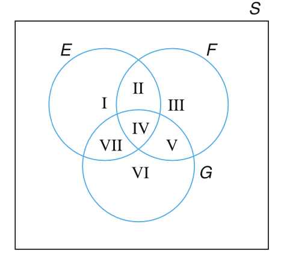
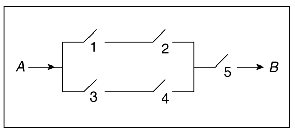
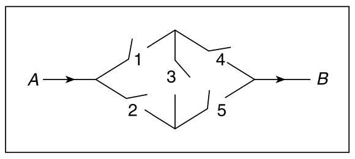
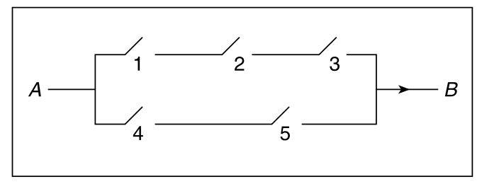

3 概率论基础
3.1 引言
对于一个实验中特定 事件（event）发生的概率（probability）而言，概率 这个概念具有多种含义或解释。例如，如果一位地质学家说 “某地区有 60% 的可能性存在石油”，对于地质学家的这一说法，我们可能都会有一些先入为主的观点。事实上，我们中的大多数人可能会用以下两种方式中的一种来解释地质学家的这一说法：
地质学家认为，从长远来看，在外部环境与所考虑地区非常相似的地区中，有 60% 的地区存在石油。
地质学家认为该地区含有石油的可能性大于不含有石油的可能性，而且实际上，60% 是地质学家对该地区含有石油这一假设的信心度量。
对事件概率（the probability of an event ）的上述两种解释分别是：频率解释（frequency interpretation）和 主观解释（subjective interpretation）。
- 在 频率解释 中，我们把实验中一个给定结果的概率看作是该结果的一个 “属性”（property）。我们认为，可以通过不断的、重复实验来确定结果出现的”概率”——在实验中，观察到的、该结果出现的比例就是其概率。普遍情况下，科学家眼中的概率就是 频率解释。
- 在 主观解释 中，我们并不把概率看作是给定实验结果的“属性”，而是看作引用该概率的人对结果发生的可能性的信念。因此，在 主观解释 中，概率成了一个主观概念，此时，概率除了表达个人的信心程度外并没有其他意义。哲学家和某些经济决策者往往对 主观解释 青睐有加。
然而，无论给予概率哪种解释，人们一致认为在这两种情况下概率的数学理论都是相同的。例如，如果你认为明天下雨的概率是 0.3，明天多云但不下雨的概率是 0.2，那么你会认为明天多云或下雨的概率就是 0.5。并且 0.5 的结果与我们对概率的主观解释无关。
在本章中，我们会先研究如下的概念：样本空间（sample space）、实验中的 事件（events），然后介绍概率论中公认的规则（rules）和公理（axioms）。
3.2 样本空间和事件
让我们思考这样的一个实验，在该实验中，我们无法提前确切的预测实验结果。虽然我们无法提前知晓实验结果，但我们可以假定该实验的、所有可能的、结果集合是已知的。所有可能的实验结果的集合，我们称之为实验的 样本空间（sample space），并用 \(S\) 来表示 样本空间。
样本空间 的例子如下所示：
例 3.1 对于确定新生儿性别的实验，\(S=\{g,\ b\}\)，其中，\(g\) 表示小孩为女孩，\(b\) 表示小孩为男孩。
例 3.2 对于确定已编号的 7 匹马（编号为 1~7 号）之间的赛马实验，\(S=\{(1, 2, 3, 4, 5, 6, 7)的所有排序\}\)。(2, 3, 1, 6, 5, 4, 7) 的实验结果意味着 2 号马排在第一名，3 号马排在第二名，然后是 1 号马，依此类推……
例 3.3 假如我们想确定患者的最小有效用药剂量，则这个实验的一个可能的样本空间就是让 \(S\) 包含所有的正数，即 \(S=(0,\ \infty)\)。如果用药剂量为 \(x\) 时开始对患者有效，但是任何低于 \(x\) 的用药剂量均对患者无效，那么此次试验的结果就是 \(x\)。
样本空间 的任何子集 \(E\) 称之为一个 事件（event）。也就是说，一个 事件 是由实验的可能结果组成的集合。如果实验的结果存在于 \(E\) 中，那么我们就说， \(E\) 已经发生。如下是 事件 的一些例子：
- 在 例 3.1 中，如果 \(E = \{g\}\)，那么 \(E\) 表示的事件为：新生儿为女孩。类似的，如果 \(F = \{b\}\)，那么 \(F\) 表示的事件为：新生儿为男孩。
- 在 例 3.2 中，如果 \(E=\{以 3 为首的所有排序\}\)，则 \(E\) 表示的事件为：3 号马赢得比赛。
对于样本空间 \(S\) 中的任意两个事件 \(E\) 和 \(F\)，我们定义一个新事件 \(E \cup F\)，并称其为事件 \(E\) 和 \(F\) 的并集。\(E \cup F\) 由所有属于 \(E\) 或 \(F\) 或同时属于 \(E\) 和 \(F\) 的结果组成。也就是说，如果 事件 \(E\) 或 事件 \(F\) 发生，那么事件 \(E \cup F\) 就会发生。例如，在 例 3.1 中，如果 \(E = \{g\}\) 且 \(F = \{b\}\)，那么 \(E \cup F = \{g, b\}\)。也就是说，\(E \cup F\) 是整个样本空间 \(S\)。在 例 3.2 中，如果 \(E = \{所有以 6 为首的比赛结果\}\) 是 6 号马赢得比赛的事件，而 \(F = \{所有第二名是 6 的比赛结果\}\) 是 6 号马获得第二名的事件，那么 \(E \cup F\) 就是6 号马获得前两名的事件。
类似地，对于样本空间 \(S\) 中的任意两个事件 \(E\) 和 \(F\)，我们也可以定义一个新事件 \(EF\)（有时也记作 \(E \cap F\)），并称之为事件 \(E\) 和 \(F\) 的交集。\(E \cap F\) 由属于 \(E\) 并且同时属于 \(F\) 的所有结果组成。也就是说，只有当事件 \(E\) 和 \(F\) 都发生时，事件 \(EF\) 才会发生。例如，在 例 3.3 中，如果 \(E = (0, 5)\) 是药品所需剂量小于 5 的事件，而 \(F = (2, 10)\) 是所需剂量在 2~10 之间的事件，那么 \(EF = (2, 5)\) 就是所需剂量在 2~5 之间的事件。在 例 3.2 中，如果 \(E = \{所有以 5 结尾的结果\}\) 是5 号马获得最后一名的事件，而 \(F = \{所有以 5 为首的结果\}\) 是 5 号马获得第一名的事件，那么事件 \(EF\) 则不包含任何结果，因此事件 \(EF\) 不可能发生。对于不可能发生的事件，我们称其为 空事件，并用 \(\emptyset\) 表示。因此，\(\emptyset\) 指的是不包含任何实验结果的事件。如果 \(EF = \emptyset\)，则意味着 \(E\) 和 \(F\) 不能同时发生，此时我们称 \(E\) 和 \(F\) 为 互斥事件。
对于 \(\forall E\)，我们定义事件 \(E^c\) 为事件 \(E\) 的补集。事件 \(E^c\) 由样本空间 \(S\) 中不属于 \(E\) 的所有结果组成。也就是说，当且仅当事件 \(E\) 不发生时，\(E^c\) 才会发生。在 例 3.1 中，如果 \(E = \{b\}\) 是小孩为男孩的事件，那么 \(E^c = \{g\}\) 就是小孩为女孩的事件。需要注意，由于实验必须会产生某种结果，因此 \(S^c = \emptyset\)。
\(E^c=\{\forall F \subset S,\ E \cap F = \emptyset 且 E \cup F = S\}\)
对于任意两个事件 \(E\) 和 \(F\)，如果事件 \(E\) 中的所有结果在事件 \(F\) 中都存在，那么我们说事件 \(E\) 包含在事件 \(F\) 中，并记作 \(E \subset F\)。因此，如果 \(E \subset F\)，那么事件 \(E\) 的发生意味着事件 \(F\) 必然发生。如果 \(E \subset F\) 且 \(F \subset E\)，那么我们说 \(E\) 和 \(F\) 相等（或相同），并记作 \(E = F\)。
我们也可以定义超过两个事件的并集和交集。特别是，事件 \(E_1, E_2, ..., E_n\) 的并集，记作 \(E_1 \cup E_2 \cup ... \cup E_n\) 或者 \(\cup_1^n{E_i}\)。事件 \(\cup_1^n{E_i}\) 至少包含一个 \(E_i(i = 1, 2, ..., n)\) 中的所有结果。类似地，事件 \(E_i(i = 1, 2, ..., n)\)的交集，记作 \(E_1E_2...E_n\)，为同时出现在所有事件 \(E_i(i = 1, 2, ..., n)\) 中的结果组成的事件。换句话说，当至少有一个事件 \(E_i\) 发生时，\(E_i\) 的并集就会发生；当所有事件 \(E_i\) 都发生时，则 \(E_i\) 的交集就会发生。
3.3 事件的代数运算和韦恩图表示
韦恩图（Venn DIagram）是一种用来描述事件之间逻辑关系的、非常有用的图形化表示。用一个矩形表示样本空间 \(S\)，而用矩形内的圆表示样本空间中的事件 \(E\), \(F\), \(G\),… 对图中的特定区域进行着色以表示我们感兴趣的事件。例如，在 图 3.1 所示的三个韦恩图中，着色区域分别表示事件 \(E \cup F\)（\(E\) 和 \(F\) 的并集），\(EF\)（\(E\) 和 \(F\) 的交集），以及 \(E^c\)（\(E\) 的补集）。图 3.2 所示的韦恩图表示 \(E \subset F\)（\(E\) 是 \(F\) 的子集）。
事件的并集、交集和补集操作类似于代数中的规则，例如：
- 交换律：\(E \cup F = F \cup E\)，\(EF=FE\)
- 结合律：\((E \cup F) \cup G = E \cup (F \cup G)\)，\((EF)G=E(FG)\)
- 分配率：\((E \cup F)G = EG \cup FG\)，\(E(F \cup G) = (E \cup G)(F \cup G)\)
可以通过证明等式左侧事件中的任何结果也包含在等式右侧的事件中来验证如上的事件操作规则。可以通过韦恩图来证明这如上的规则，例如，可以通过 图 3.3 中所示的一系列韦恩图来证明分配率。
基于事件的并集、交集和补集形成的如下的关系称之为德摩根定律（DeMorgan’s laws）。
- \((E \cup F)^c = E^cF^c\)
- \((FE)^c = E^c \cup F^c\)
3.4 概率论公理
如果一个实验在完全相同的条件下不断重复，那么对于任何事件 \(E\)，随着重复次数的增加，包含与 \(E\) 中结果的比例会接近某个常数。例如，如果不断抛一枚硬币，随着抛掷次数的增加，正面向上的比例将接近某个值。当我们谈到某个事件的概率时，我们通常指的是这种恒定的极限频率（constant limiting frequency）。
纯从数学观点来看，对于具有样本空间 \(S\) 的实验中的每个事件 \(E\)，我们都假设存在一个数字 \(P (E)\) ，\(P(E)\) 满足以下三个公理（axiom）：
- 公理1：\(0 \le P(E) \le 1\)
- 公理2：\(P(S) = 1\)
- 公理3：对于任何的互斥事件序列 \(E_1\)，\(E_2\)，……，\(P\bigg(\bigcup_{i=1}^{n}E_i\bigg) = \sum_{i=1}^{n}{P(E_i)}\)，\(n = 1,2,...,\infty\)
我们称 \(P(E)\) 为事件 \(E\) 的概率。
因此，公理 1 表明实验的结果位于 \(E\) 中的概率是一个介于 0 和 1 之间的数。公理 2 表明实验结果将是样本空间 \(S\)（概率为 1） 的一中情况。公理 3 表明，对于任何一组互斥事件，至少一个事件发生的概率等于这组事件各自概率的和。
应该注意的是，如果我们把 \(P(E)\) 看作大量重复执行实验时事件 \(E\) 的相对频率，那么 \(P(E)\) 确实会满足上述公理。例如，位于 \(E\) 中的实验结果的比例显然在 0 和 1 之间，而位于 \(S\) 中实验结果的比例是 1（因为所有结果都在 \(S\) 中）。此外，如果位于 \(E\) 和 \(F\) 中的结果没有交集，那么结果在 \(E\) 或 \(F\) 中的比例是它们各自频率的和。对于 公理 3，例如，假设实验为抛掷一对骰子，同时假设事件 \(E\) 为两枚骰子的点数总和是 2、3 或 12，事件 \(F\) 为点数总和是 7 或 11。如果 \(E\) 发生的概率为 11%，\(F\) 发生的概率为 22%，那么有 33% 的结果将是 2、3、12、7 或 11。
现在，我们将使用这些公理来证明关于概率的两个简单命题（proposition）。首先，\(E\) 和 \(E^c\) 始终是互斥的，并且由于 \(E \cup E^c = S\)，根据 公理 2 和 公理 3 有：
\[ 1 = P(S) = P(E \cup E^c) = P(E) + P(E^c) \]
根据如上等式，我们有：
命题 3.1 \(P(E^c) = 1 - P(E)\)
换句话说，命题 3.1 表明，一个事件不发生的概率等于 1 减去它发生的概率。例如，如果抛一枚硬币，正面向上的概率是 3/8，那么反面向上的概率必须是 5/8。
我们将证明的第二个命题给出了两个事件并集的概率与它们各自的概率以及他们的交集的概率之间的关系。
命题 3.2 \(P(E \cup F) = P(E) + P(F) - P(EF)\)
图 3.4 所示的韦恩图是证明 命题 3.2 的最简单的方法。在 图 3.4 中，区域 I、II、III 是互斥的，因此：
\[ \begin{align} P(E \cup F) &= P(I) + P(II) + P(III) \\ P(E) &= P(I) + P(II) \\ P(F) & = P(II) + P(III) \\ \therefore P(E \cup F) &= P(E) +P(F) - P(II) \\ \because P(II) &= P(EF) \\ \therefore P(E \cup F) &= P(E) +P(F) - P(EF) \end{align} \]
习题 3.1 内华达州有 28% 的男性吸烟，6% 的男性吸雪茄，3% 的男性既吸雪茄又吸烟。那么，有既不吸雪茄也不吸烟的男性占比是多少？
解 3.1. 设 \(E\) 为事件——随机选择的一名男性吸香烟，设 \(F\) 为事件——该男性吸雪茄。那么，这个人要么吸香烟，要么吸雪茄的概率是：
\[ P(E \cup F ) = P (E) + P (F ) − P (EF) = 0.28 + 0.06 − 0.03 = 0.31 \]
则，该男性既不吸雪茄也不吸烟的概率为 1 - 0.31 = 0.69，这意味着有 69% 的男性既不吸雪茄也不吸烟。
事件 A 的 赔率（odds）定义如下：
\[ \frac{P(A)}{P(A^c)} = \frac{P(A)}{1 - P(A)} \]
因此，事件 \(A\) 的赔率表示 \(A\) 发生的可能性比它不发生的可能性多多少。例如，如果 \(P(A) = \frac{3}{4}\)，那么 \(\frac{P(A)}{1 − P (A)} = 3\)，所以其赔率是 3。因此，\(A\) 发生的可能性是它不发生的可能性的 3 倍。（通常的说法是，事件 \(A\) 的赔率是 3 比 1。）
3.5 等概率样本空间
对于执行大量次数的实验来说，我们会很自然地假设：样本空间中的每个结果发生的可能性是相等的。也就是说，对于许多实验而言，其样本空间 \(S\) 是一个有限集合，\(S = \{1,2,...,N\}\)，通常很自然地假设：
\[ P(\{1\}) = P(\{2\}) = ··· = P(\{N\}) = p \]
根据 公理 2 和 公理 3，我们有：\(1 = P(S) = P(\{1\}) + P(\{2\}) + ··· + P(\{N\}) = Np\)，故而有：
\[ P(\{i\}) = p = \frac{1}{N} \]
由此，根据 公理 3，对于任意事件 \(E\)：\(P(E)=\frac{位于\ E\ 中的结果数}{N}\)。
也就是说，如果我们假设实验的每个结果发生的可能性是相等的，那么任何事件 \(E\) 的概率就等于样本空间中包含在 \(E\) 中的结果的比例。
因此，为了计算概率，通常需要有效地计算出给定事件可以以多少种不同的方式发生。为此，我们将使用以下规则。
3.5.1 计数的基本原理
假设要执行两个实验，如果实验 1 可能有 \(m\) 种可能的结果，并且对于实验 1 的每一种结果，实验 2 都有 \(n\) 种可能的结果，那么这两个实验总共有 \(mn\) 种可能的结果。
可以使用如下的方式来枚举所有可能的实验结果：
\[ \begin{array}{ccc} (1,1), & (1,2), & ..., &(1,n) \\ (2,1), & (2,2), & ..., &(2,n) \\ \ \ \ ... & \\ (m,1), & (m,2), & ..., &(m,n) \\ \end{array} \]
如果实验 1 产生了第 \(i\) 种可能的结果，并且实验 2 产生了第 \(j\) 种可能的结果，我们称实验结果为 \((i, j)\)。因此，可能的结果集由 \(m\) 行组成，其中每行包含 \(n\) 个元素。
习题 3.2 从一个包含 6 个白球和 5 个黑球的碗中 “随机抽取” 两个球。其中一个球是白色的，另一个是黑色的概率是多少？
解 3.2. 如果我们认为选球的顺序非常重要，那么第一个抽取的球可能是 11 个中的任何一个，第二个抽取的球可能是剩下的 10 个中的任何一个，因此样本空间包含 11 × 10 = 110 个点。此外，有 6 × 5 = 30 种方式使得第一个球是白色的，第二个球是黑色的。同样地，有 5 × 6 = 30 种方式使得第一个球是黑色的，第二个球是白色的。因此，假设 “随机抽取” 意味着样本空间中的每个点都有相同的可能性，那么我们可以看出需要计算的概率是：
\[ \frac{30 + 30}{110} = \frac{6}{11} \]
对于两个以上的实验，计数的基本原理 可以按如下的方式泛化（generalized）：
如果要执行 \(r\) 个实验，其中第一个实验有 \(n_1\) 种可能的结果，如果对于这 \(n_1\) 种可能的结果，第二个实验有 \(n_2\) 种可能的结果，如果对于前两个实验的每种可能的结果，第三个实验有 \(n_3\) 种可能的结果，以此类推，那么这 \(r\) 个实验总共有 \(n_1 \cdot n_2 \cdot \cdot \cdot n_r\) 种可能的结果。
为了说明 基本计数原理，让我们来确定 \(n\) 个不同对象的线性序（linear order）排列的方式的数量。例如，字母 a、b、c 有多少种不同的排列方式？
通过直接枚举，我们可以发现有 6 种，即 abc、acb、bac、bca、cab、cba，其中的每一个都称为一个 排列（permutation）。因此，3 个对象有 6 种可能的 排列。如上的结果也可以从基本原理中得出，因为第一个对象可以是 3 个字母中的任何一个，第二个对象可以从剩下的 2 个字母中选择，第三个对象则从剩下的一个字母中选择。因此，有 3・2・1 = 6 种可能的 排列。
以此类推，对于 \(n\) 个对象，其不同的排列种类为：\(n \cdot (n-1) \cdot (n-2) \cdot \cdot \cdot 3 \cdot 2 \cdot 1\)。为了方便，我们将如上的式子记为 \(n!\)，读作“\(n\) 的阶乘”。为了方便，我们令 \(0!=1\)。
\[ n! = n \cdot (n-1) \cdot (n-2) \cdot \cdot \cdot 3 \cdot 2 \cdot 1 \]
例如：
- \(1! = 1\)
- \(2! = 2 \cdot 1 = 2\)
- \(3! = 3 \cdot 2 \cdot 1 = 6\)
- \(4! = 4 \cdot 3 \cdot 2 \cdot 1 = 24\)
习题 3.3 琼斯先生有 10 本书要放在他的书架上。其中，有 4 本是数学书，3 本是化学书，2 本是历史书，还有 1 本是语言书。琼斯想把这些书按主题分类放在一起排列在书架上。有多少种不同的排列方式？
解 3.3. 有 4! 3! 2! 1! 种排列方式使得数学书排在最前面，然后是化学书，接着是历史书，最后是语言书。同样地，对于每个可能的主题顺序，都有 4! 3! 2! 1! 种可能的排列方式。因此，由于有 4! 种可能的主题顺序，所以所求的答案是 4! × 4! × 3! × 2! × 1! = 6912。
习题 3.4 一个概率论课程的班级由 6 名男生和 4 名女生组成。在一次考试中，根据学生的考试成绩进行了排名。假设 10 名学生的考试成绩都不相同：
- （a）学生的排名有多少种不同的可能？
- （b）如果所有排名的可能性都相同，那么女生获得前 4 名的概率是多少？
解 3.4.
- （a）因为每个排名都对应着 10 个人的一个特定有序排列，所以学生的排名可能性有 10! = 3,628,800 种。
- （b）由于女生有 4! 种可能的排名方式，男生有 6! 种可能的排名方式，根据 基本计数原理，女生获得前 4 名的可能排名有 (6!)(4!) = (720)(24) = 17,280 种。因此，所求的概率为：\(\frac{6!4!}{10!}=\frac{4 \cdot 3 \cdot 2 \cdot 1}{10 \cdot 9 \cdot 8 \cdot 7} = \frac{1}{210}\)。
现在，假设我们想要从 \(n\) 个对象中选择 \(r\) 个对象，并确定这 \(r\) 个不同对象所形成的排列方式的数量。例如，从五个物品 A、B、C、D、E 中选择 3 个物品，总共有多少种不同的选择方式？为了回答这个问题，由于有 5 种方式来选择第一个物品，4 种方式来选择下一个物品，3 种方式来选择最后一个物品。因此，当选择的物品存在顺序依赖时，有 5・4・3 种方式来选择这 3 个物品。然而，在存在顺序依赖时，任意选择的 3 个物品（比如 A、B 和 C ）都会被计算 6 次（ABC、ACB、BAC、BCA、CAB、CBA），因此可以形成的不同选择的总数是：(5・4・3)/(3・2・1) = 10。
一般来说，\(n (n − 1)・・・(n − r + 1)\) 表示在顺序依赖条件下，从 \(n\) 个物品中选择 \(r\) 个物品的不同选择方式的数量。由于在这种计数中，每 \(r\) 个物品的选择方式都会被计算 \(r!\) 次，因此，从 \(n\) 个物品中可以形成的 \(r\) 个不同物品的数量是：
\[ \frac{n \cdot (n-1) \cdot \cdot \cdot(n-r+1)}{r!} = \frac{n!}{(n-r)!r!} \]
3.5.2 组合的符号和术语
定义 3.1 定义 \(\left(\begin{array}{cc} n \\ r \end{array}\right), \forall r \le n\) 为一次性从 \(n\) 个物品中选择 \(r\) 个物品的组合数量，则：
\[ \left(\begin{array}{cc} n \\ r \end{array}\right) = \frac{n!}{(n-r)!r!} \]
\(\left(\begin{array}{cc} n \\ r \end{array}\right)\) 表示在不考虑抽取顺序的情况下，从 \(n\) 个元素中选择 \(r\) 个元素的不同组合数。例如：
- 从 8 个人中选择 2 个人的方式：\(\left(\begin{array}{cc} 8 \\ 2 \end{array}\right) = \frac{8 \cdot 7}{2 \cdot 1}=28\)。
- 从 10 个人中选择 2 个人的方式：\(\left(\begin{array}{cc} 10 \\ 2 \end{array}\right) = \frac{10 \cdot 9}{2 \cdot 1}=45\)。
特别注意的是，\(\left(\begin{array}{cc} n \\ 0 \end{array}\right)\) = \(\left(\begin{array}{cc} n \\ n \end{array}\right)\) = 1。
习题 3.5 要从 6 名男性和 9 名女性中随机选取 5 人组成一个委员会。如果是随机选择的话，这个委员会由 3 名男性和 2 名女性组成的概率是多少？
解 3.5. 随机选取意味着 \(\left(\begin{array}{cc} 15 \\ 5 \end{array}\right)\) 种可能的组合数中的任何一组被选取的可能性都是一致的。因为，3 名男性的选择方式有 \(\left(\begin{array}{cc} 6 \\ 3 \end{array}\right)\) 种，2 名女性的选择方式有 \(\left(\begin{array}{cc} 9 \\ 2 \end{array}\right)\) 种，根据 基本计数原理，委员会由 3 名男性和 2 名女性组成的概率为：
\[ \frac{\left(\begin{array}{cc} 6 \\ 3 \end{array}\right) \cdot \left(\begin{array}{cc} 9 \\ 2 \end{array}\right)}{\left(\begin{array}{cc} 15 \\ 5 \end{array}\right)} = \frac{240}{1001} \]
习题 3.6 从一个具有 \(n\) 个物品的集合中随机抽取大小为 \(k\) 的样本，则某个给定的物品被抽取到的概率是多少？
解 3.6. 如果某个给定的物品位于 \(k\) 中，则意味着 \(k\) 由给定的 1 个物品和剩余的 \(k-1\) 个物品（从 \(n-1\) 个物品中抽取的）组成，则 \(k\) 个物品的抽取方式为 \(\left(\begin{array}{cc} {n-1} \\ {k-1} \end{array}\right)\)。另外，从 \(n\) 个物品中抽取 \(k\) 个物品的方式总共有 \(\left(\begin{array}{cc} n \\ k \end{array}\right)\)。因此，从 \(n\) 个物品的集合中随机抽取大小为 \(k\) 的样本，则某个给定的物品被抽取到的概率为：
\[ \frac{\left(\begin{array}{cc} {n-1} \\ {k-1} \end{array}\right)}{\left(\begin{array}{cc} n \\ k \end{array}\right)} = \frac{\frac{(n-1)!}{(n-k)!(k-1)!}}{\frac{n!}{(n-k)!k!}} = \frac{k}{n} \]
习题 3.7 一个篮球队由 6 名黑人球员和 6 名白人球员组成。需要对这些球员随机地两两配对，以确定他们的室友。如果配对是随机进行的，那么黑人球员与白人球员不是室友的概率是多少？
解 3.7. 首先，我们设想对这 6 对球员进行编号，分别是：第 1 对，第 2 对，……。对于第 1 对 球员，有 \(\left(\begin{array}{cc} 12 \\ 2 \end{array}\right)\) 种配对方式。然后，第 2 对球员则有 \(\left(\begin{array}{cc} 10 \\ 2 \end{array}\right)\) 种配对方式。对于第 3 对球员，则有 \(\left(\begin{array}{cc} 8 \\ 2 \end{array}\right)\) 种配对方式，……因此，根据 基本计数原理的泛化规则，这 6 对球员的配对方式总共有 \(\left(\begin{array}{cc} 12 \\ 2 \end{array}\right) \left(\begin{array}{cc} 10 \\ 2 \end{array}\right) \left(\begin{array}{cc} 8 \\ 2 \end{array}\right) \left(\begin{array}{cc} 6 \\ 2 \end{array}\right) \left(\begin{array}{cc} 4 \\ 2 \end{array}\right) \left(\begin{array}{cc} 2 \\ 2 \end{array}\right) = \frac{12!}{(2!)^6}\)。所以，不考虑分组序号的情况下，配对方式总共有 \(\frac{12!}{2^6 \cdot 6!}\)。
同理，6 名黑（白）人球员之间配对的方式均有 \(\frac{ 6! }{ 2^3 \cdot 3! }\)。因此，黑人球员与白人球员不是室友的概率为：\(\frac{ (\frac{ 6! }{ 2^3 \cdot 3! })^2 }{ \frac{ 12! }{ 2^6 \cdot 6! } } = \frac{ 5 }{ 231 } = 0.0216\)
习题 3.8 房间里有 \(n\) 个人，则他们的生日不在同一天的概率是多少？如果这个概率要低于 50%，那么 \(n\) 至少是多少？
解 3.8. 在不考虑闰年的情况下，每个人的生日可以为一年 365 天中的任何一天，所以 \(n\) 个人的生日的可能性为 \(365^n\)。如果他们的生日均不在同一天，则其可能性为 \(365 \cdot 364 \cdot \cdot \cdot (365 - n + 1)\)。这是因为第一个人的生日可以是 365 天中的任何一天，第二个人的生日可以是剩下的 364 天中的任何一天，第三个人的生日可以是剩下的 363 天中的任何一天，以此类推。因此，他们的生日不在同一天的概率为 \(\frac{ 365 \cdot 364 \cdot \cdot \cdot (365 - n + 1) }{ (365)^n }\)。
令人惊讶的事实是，当 \(n \ge 23\) 时，这个概率小于 50%。也就是说，如果房间里至少有 23 个人的时候，那么他们之中至少有两个人的生日相同的概率将超过 50%。对这个结果，许多人最初会感到惊讶，因为与 365（一年的天数）相比，23 这个数字显得如此之小。然而，每两个人其生日相同的概率是 \(\frac{ 365 }{ (365)^2 }=\frac{ 1 }{ 365 }\)。而在一个由 23 人组成的群体中，有 \(\left(\begin{array}{cc} 23 \\ 2 \end{array}\right) = 253\) 对不同的分组。从这个角度来看，这个结果就不再那么令人惊讶了。
3.6 条件概率
在本节中，我们将介绍概率论中最重要的概念之一 ——条件概率（conditional probability）。条件概率 的重要性体现在两个方面。首先，当涉及到实验结果的部分信息可用时，或者需要根据额外信息重新计算概率时，我们经常需要利用 条件概率 来计算概率。其次，事实证明，计算事件概率的最简单的方法通常是以另一事件是否发生作为先决条件。
如下是一个 条件概率 的例子：假设某人抛了一对骰子，该实验的样本空间 \(S\) 可以看作是以下 36 个结果的集合：
\[ S = \{(i, j), \ \ i,j \in [1,6] \} \]
当第一个骰子为 \(i\) 点并且第二个骰子为 \(j\) 点时，我们称对应的实验结果为 \((i,j)\)。假设这 36 个结果发生的可能性都是一样的，则其概率为 \(\frac{ 1 }{ 36 }\)。接下来，我们观察到第一个骰子的点数是 3，那么在这种情况下，两个骰子的点数之和为 8 的概率是多少？为了计算概率，我们做如下的推理：
- 在第一个骰子的点数是 3 的情况下，我们的实验结果最多有 6 种可能：(3,1)，(3,2)，(3,3)，(3,4)，(3,5)，(3,6)。
- 因为每种结果出现的概率都是相同的，因此在第一个骰子为 3 点的条件下，其 6 种可能出现的结果的每种结果出现的概率都是 \(\frac{ 1 }{ 6 }\)。
- 因此，两个骰子的点数之和为 8 的结果为 (3, 5)，其概率为 \(\frac{ 1 }{ 6 }\)。
如果我们令 \(E\) 表示两个骰子的点数之和为 8 这一事件，令 \(F\) 表示第一个骰子的点数为 3 这一事件，则我们刚才获取到的概率称之为在 \(F\) 发生的条件下，\(E\) 的 条件概率，并记作 \(P(E|F)\)。
作为一个通用的公式，\(P(E|F)\) 可以应用于所有的事件 \(E\) 和 \(F\)。具体来说，如果事件 \(F\) 发生，那么为了使得 \(E\) 也发生，则实际发生的事件必须同时位于 \(E\) 和 \(F\) 中，也就是说，必须在 \(EF\) 中。然而，由于我们知道 \(F\) 已经发生，因此我们可以将 \(F\) 视为新的样本空间，因此事件 \(P(E|F)\) 发生的概率将等于 \(EF\) 相对于 \(F\) 的概率。即：
\[ p(E|F)=\frac{ P(EF) }{ P(F) } \tag{3.1}\]
如 图 3.5 所示，仅当 \(P(F) > 0\) 时，式 3.1 才有意义，这意味着，当且仅当 \(P(F) > 0\) 时，\(P(E|F)\) 才有意义。
式 3.1 给出的条件概率的定义与在大量重复试验下使用相对频率作为概率的解释是一致的。为了理解这一点，假设重复执行实验 \(n\) 次，由于 \(P(F)\) 是多次执行条件下 \(F\) 发生的比例，因此 \(F\) 大约会发生 \(n \cdot P(F)\) 次。类似地，在实验中，大约有 \(n \cdot P(EF)\) 次实验会出现 \(E\) 和 \(F\) 都发生的情况。因此，在大约 \(n \cdot P (F)\) 次 \(F\) 发生的实验中，大约有 \(n \cdot P(EF)\) 次 \(E\) 也会发生。也就是说，对于那些结果属于事件 \(F\) 的实验，其结果也属于事件 \(E\) 的比例大约是：\(\frac{ n \cdot P(EF) }{ n \cdot P(F) } = \frac{ P(EF) }{ P(F) }\)。
由于当 \(n\) 变得越来越大时，如上的近似计算会变得越来越精确，因此 式 3.1 给出了在 \(F\) 已经发生的情况下 \(E\) 也发生的 条件概率 的适当定义。
习题 3.9 一个箱子里有 40 个晶体管，其中有 5 个残品（一开始就无法使用），10 个次品（使用几个小时后才无法使用），以及 25 个合格品。从箱子里随机选取一个晶体管并投入使用，如果该晶体管没有立即失效，那么它是合格品的概率是多少？
解 3.9. 因为抽取的晶体管没有立即失效，因此该晶体管不属于 5 个残品，因此待求解的概率为：
\[ \begin{align} P(合格品|非残品) &= \frac{ P(合格品, 非残品) }{ P(非残品) } \\ &= \frac{ P(合格品) }{ P(非残品) } \\ &= \frac{ \frac{ 25 }{ 40 } }{ \frac{ 35 }{ 40 } } \\ &= \frac{ 5 }{ 7 } \end{align} \]
应该注意的是，我们也可以通过直接处理缩减后的样本空间来获得结果。也就是说，由于我们知道所选的晶体管不是残品，问题就简化为：从包含 25 个合格品和 10 个次品的箱子中随机选择一个晶体管，该晶体管是合格品的概率是多少？显然，概率等于 \(\frac{ 25 }{ 35 }\)。
习题 3.10 琼斯所在的部门正在为那些至少有一个儿子的员工举办一场父子晚宴。这些员工都将受邀参加该晚宴，并会带上他们最小的儿子一起参加晚宴。如果已知琼斯有两个孩子，那么在他受邀参加晚宴的条件下，他的两个孩子都是男孩的概率是多少？假设样本空间为 \(S\) 且 \(S =\{(b,b),(b,g),(g,b),(g,g)\}\)，同时所有结果出现的可能性都相等（例如，\((b,g)\) 表示较小的孩子是男孩，较大的孩子是女孩）。
解 3.10. 琼斯受邀参加晚宴这一事实相当于知道他至少有一个儿子。因此，设 \(B\) 为两个孩子都是男孩的事件，\(A\) 为至少有一个孩子是男孩的事件，我们要求的概率 \(P(B|A)\) 为：\(P(B|A)=\frac{ P(AB) }{ P(A) }\) \(=\) \(\frac{ P(\{(b, b)\}) }{ P(\{(b, b), (b, g), (g, b)\}) }\) \(=\) \(\frac{ \frac{ 1 }{ 4 } }{ \frac{ 3 }{ 4 } }\) \(=\) \(\frac{ 1 }{ 3 }\)。
许多读者错误地认为，在至少有一个男孩的条件下，有两个男孩的概率是 \(\frac{1}{2}\)，而不是正确答案 \(\frac{1}{3}\)。因为他们认为琼斯无法参加晚宴等价于其孩子是男孩或女孩的概率。然而，这个假设本身就是错误的。务必记住，最初有四种等可能的结果，现在，至少有一个孩子是男孩的信息等价于知道结果不是 \((g, g)\)。因此，我们只剩下三种等可能的结果：\((b, b)\)、\((b, g)\)、\((g, b)\)，从而表明琼斯参加晚宴时其另外一个孩子为女孩的可能性是为男孩的两倍。
对 式 3.1 的两边都乘以 \(P(F)\)，我们得到：
\[ P(EF) = P(F) \cdot P(E|F) \tag{3.2}\]
式 3.2 表明事件 \(E\) 和 \(F\) 同时发生的概率等于 \(F\) 发生的概率乘以在 \(F\) 发生条件下 \(E\) 发生的条件概率。在计算事件交集的概率时，式 3.2 通常非常有用。习题 3.11 所示的例子说明了这一点。
习题 3.11 佩雷斯女士估计，她所在的公司有 30% 的可能性会在菲尼克斯设立分公司。如果设立了公司真的在菲尼克斯设立分公司，她有 60% 的把握让公司任命其为新的分公司的经理。那么，佩雷斯女士成为菲尼克斯分公司经理的概率是多少？
解 3.11. 令 \(B\) 表示公司会在菲尼克斯设立分公司，\(M\) 表示任命佩雷斯女士为新的分公司的经理，则待求解的概率为 \(P(BM)\)，根据 式 3.2 有：\(P(BM) = P(B)P(M|B) = 0.3 \cdot 0.6 = 0.18\)。因此，佩雷斯女士有 18% 的概率成为菲尼克斯分公司的经理。
3.7 贝叶斯公式
令 \(E\) 和 \(F\) 为事件，则我们可以用如下的式子表示 \(E\)：\(E = EF \cup EF^c\)。如 图 3.6 为了让一个点位于 \(E\) 中，要么这个点即位于 \(E\) 又位于 \(F\) 中，要么这个点位于 \(E\) 中但是不位于 \(F\) 中。
因为 \(EF\) 和 \(EF^c\) 是互斥的，根据 公理3 有：
\[ \begin{align} P(E)&=P(EF) + P(EF^c) \\ &=P(E|F)P(F) + P(E|F^c)P(F^c) \\ &=P(E|F)P(F) + P(E|F^c)[1 - P(F)] \end{align} \tag{3.3}\]
式 3.3 表明，事件 \(E\) 的概率是 \(F\) 发生时 \(E\) 发生的条件概率和 \(F\) 不发生时 \(E\) 发生的条件概率的加权平均数，其中，每个条件概率的权重与它所基于的事件发生的概率相同。式 3.3 是一个极其有用的公式，因为 式 3.3 允许我们通过某个事件的先决条件事件是否发生来计算该事件的概率。也就是说，在许多情况下，直接计算事件的概率非常困难，但一旦我们知道某个第二事件是否发生，计算该事件的概率就变得比较简单了。
习题 3.12 一家保险公司认为人可以分为两类——容易出意外的人和不容易出意外的人。他们的统计数据显示，一个容易出意外的人在固定的 1 年期内某个时间点发生意外的概率是 0.4，而对于一个不容易出意外的人来说，这个概率则降低到了 0.2。如果我们假设 30% 的人容易出意外，那么新购买保险的人在购买保险后一年内发生意外的概率是多少？
解 3.12. 首先根据新购买保险的人是否容易出意外进行条件化，以获得所需的概率。设 \(A_1\) 表示事件：新购买保险的人在购买后一年内会发生意外，设 \(A\) 表示新购买保险的人容易出意外事件。因此：\(P(A_1)=P(A_1|A)P(A) + P(A_1|A^c)P(A^c) = 0.26\)。
在接下来的一系列示例中，我们将展示如何根据新的信息重新评估初始概率。也就是说，我们将展示如何将新信息与初始概率相结合，以获得新的概率。
习题 3.13 双胞胎可以是同卵双胞胎，也可以是异卵双胞胎。同卵双胞胎，也称为单卵双胞胎，是由一个受精卵分裂成两个遗传上完全相同的胚胎。因此，同卵双胞胎总是拥有相同的基因组。异卵双胞胎，也称为双卵双胞胎，是由两个单独的卵子受精并进入到子宫所形成。异卵双胞胎之间的遗传联系与在不同时间出生的兄弟姐妹一样。洛杉矶某县的一位科学家想知道：目前该县出生的双胞胎中同卵双胞胎的比例，于是他委托该县的一位统计学家来研究这个问题。该统计学家最初要求县里的每家医院记录所有双胞胎的出生情况，并注明这些双胞胎是否是同卵双胞胎。然而，医院告诉她，确定新生双胞胎是否为同卵双胞胎并不是一项简单的任务，因为这需要双胞胎父母的许可，并执行复杂且昂贵的 DNA 研究，但是医院无力承担这些研究费用。经过一些讨论，统计学家只要求医院提供所有双胞胎出生情况的清单数据，并注明这些双胞胎是否是同性别。当统计学家收集到的数据表明，大约 64% 的双胞胎出生时是同性别时，统计学家宣称：大约 28% 的双胞胎是同卵双胞胎。统计学家是怎么得出这个结论的？
解 3.13. 统计学家认为同卵双胞胎总是同性别，而异卵双胞胎，就像任何一对兄弟姐妹一样，有 \(\frac{1}{2}\) 的概率是同性别。设 \(I\) 为一对双胞胎是同卵双胞胎的事件，\(SS\) 为一对双胞胎是同性别的事件。则，
\[ \begin{align} P(SS) &= P(SS|I)P(I) + P(SS|I^c)P(I^c) \\ &=1 \cdot P(I) + \frac{1}{2} \cdot \bigg(1 - P(I)\bigg) \\ &= \frac{1}{2} + \frac{1}{2}P(I) \\ &\approx 0.64 \\ \therefore P(I) &\approx 0.28 \end{align} \]
习题 3.14 让我们重新思考 习题 3.12，假设一名新购买保险的人在购买保险后一年内发生了意外，则该人属于容易出意外的分类的概率是多少？
解 3.14. 最初，在购买保险的那一刻，我们假设他有 30% 的几率是属于容易出意外的分类。也就是说，\(P(A) = 0.3\)。然而，基于他在一年内发生了意外的事实，我们现在需要重新评估他容易出意外的概率：
\[ \begin{align} P(A|A_1)&=\frac{ P(AA_1) }{ P(A_1) } \\ &= \frac{ P(A)P(A_1|A) }{ P(A_1) } \\ &= \frac{ 0.3 \cdot 0.4 }{ 0.26 } \\ &= 0.4615 \end{align} \]
习题 3.15 在回答一个多项选择题时，一个学生要么知道答案，要么猜答案。设 \(p\) 为她知道答案的概率，\(1-p\) 为她猜答案的概率。假设一个学生猜对的概率是 \(\frac{1}{m}\)，其中 \(m\) 是多项选择题的选项数量。如果一个学生的回答是正确的，那么她知道问题答案的概率是多少？
解 3.15. 令 \(C\) 为事件：该学生回答对了该问题，\(K\) 为事件：该学生知道答案，则该学生回答正确时，她知道问题答案的概率为：\(P(K|C) = \frac{P(KC)}{P(C)}\)。
\[ \begin{align} \because P(KC) &= P(C|K)P(K) \\ &=1 \cdot p \\ &=p \end{align} \]
为了计算最终的概率，我们还需要计算 \(P(C)\) （该学生可以回答正确的概率）： \[ \begin{align} P(C) &= P(C|K)P(K) + P(C|K^c)P(K^c) \\ &=p + \frac{1}{m} \cdot (1-p) \\ \therefore P(K|C)&= \frac{p}{p + \frac{1}{m} \cdot (1-p)} \\ &=\frac{mp}{1+(m-1)p} \end{align} \]
因此，如果 \(m=5\)，\(p=\frac{1}{2}\)，则如果该学生回答正确时，他知道答案的概率为 \(\frac{5}{6}\)。
习题 3.16 对于某种疾病的检测而言，实验室的血液检测有 99% 的准确率。然而，该血液检测也会对 1% 的健康受检者产生 “假阳性” 结果（也就是说，如果一个健康的人接受检测，那么检测结果会有 0.01 的概率显示他或她患有该疾病）。如果人群中有 0.5% 的人确实患有这种疾病，那么一个人的检测结果为阳性时，他患有这种疾病的概率是多少？
解 3.16. 令 \(D\) 为事件：受检测的人患有该疾病，\(E\) 为事件：检测结果为阳性。则：
\[ \begin{align} P(D|E) &= \frac{P(DE)}{P(E)} \\ &= \frac{P(E|D)P(D)}{P(E|D)P(D) + P(E|D^c)P(D^c)} \\ &=\frac{0.99 \cdot 0.005}{0.99 \cdot 0.005 + 0.01 \cdot 0.995} \\ &= 0.3322 \end{align} \]
因此，如果检测结果为阳性，则该人实际上患有该疾病的概率只有 33%。因为血液检测似乎是一种很好的方式，因此很多学生认为这个比例应该会更高，所以他们经常对这个结果感到惊讶。因此是时候提出第二个论点了，尽管第二个论点不如前面的论点严格，但它可能更具启发性。
由于实际患有这种疾病的人口比例为 0.5%，因此平均而言，每 200 个接受检测的人中就有 1 人患有这种疾病。该检测将以 0.99 的概率确认这个人患有疾病。因此，平均而言，每 200 个接受检测的人中，该检测将确认 0.99 人患有疾病。另一方面，在（平均）199 个健康人中，该检测将错误地认为有 \(199 \cdot 0.01\) 的人患有疾病。因此，对于该检测确认的患有疾病的每 0.99 个病人而言，平均有 1.99 个健康人被错误地认为患有该疾病。因此，当检测结果显示一个人患病时，其结果是正确的比例是：\(\frac{0.99}{0.99 + 1.99}=0.3322\)
当需要根据新的信息更新概率时，式 3.3 非常有用。本章接下来的例子将体现这一点。
习题 3.17 在刑事调查的某个阶段，负责调查的警官有 60% 的信心认为某个嫌疑人有罪。假设现在发现了新的证据，显示罪犯具有某种特征（如左撇子、秃头、棕色头发等）。如果有 20% 的人具有这种特征，那么如果嫌疑人具有犯罪特征时，警官对嫌疑人有罪的信心应该是多少？
解 3.17. 令 \(G\) 表示事件：嫌疑人有罪，\(C\) 表示事件：嫌疑人具有罪犯特征。则：
\[ \begin{align} P(G|C)&=\frac{P(GC)}{P(C)} \\ \because P(GC) &= P(G)P(C|G) \\ &= 0.6 \cdot 1 \\ &= 0.6 \\ \because P(C) &= P(C|G)P(G) + P(C|G^c)P(G^c) \\ &=1 \cdot 0.6 + 0.2 \cdot 0.4 \\ &=0.68 \end{align} \]
\(P(C|G^c)\) 表示如果嫌疑人实际上是清白的，那么他具有犯罪特征的概率，我们假设该概率和等于具有这种特征的人比例一致，也就是 0.2。于是：\(P(G|C) = \frac{0.6}{0.68} = 0.882\)。
习题 3.18 现在让我们假设犯罪者拥有犯罪特定的可能性为 90%，那么在这种情况下，嫌疑人犯罪的可能性有多大？
解 3.18. 在这种情况下，情况与以前相同，只是现在嫌疑人在犯罪的情况下具有该特征的概率是0.9，而不是1。于是：
\[ \begin{align} P(G|C)&=\frac{P(GC)}{P(C)} \\ \because P(GC) &= P(G)P(C|G) \\ &= 0.6 \cdot 0.9 \\ &= 0.54 \\ \because P(C) &= P(C|G)P(G) + P(C|G^c)P(G^c) \\ &=0.9 \cdot 0.6 + 0.2 \cdot 0.4 \\ &=0.62 \\ \therefore P(G|C) &= \frac{0.54}{0.62} \\ &=0.871 \end{align} \]
假设 \(F_1, F_2, ..., F_n\) 是互斥事件，则 \(\bigcup_{i=1}^{n}{F_i} = S\)。换句话说，\(F_i\) 中有且仅有一个事件会发生。则有：
\[ E = \bigcup_{i=1}^{n}{(EF_i)} \]
基于 \(EF_i\) 为互斥事件的事实，我们有：
\[ \begin{align} P(E)&=\sum_{i=1}^{n}{P(EF_i)} \\ &=\sum_{i=1}^{n}{\big(P(E|F_i)P(F_i)\big)} \end{align} \tag{3.4}\]
对于 \(n\) 个互斥事件而言，式 3.3 可以泛化为 式 3.4。式 3.4 表示在给定一组互斥事件 \(F_1,F_2,...,F_n\) 时，我们如何通过 \(F_i\) 发生时的 \(E\) 的条件概率来计算 \(P(E)\)。也就是说，\(P(E)\) 等于 \(P(E|F_i)\) 的加权平均值，其权重为对应的 \(F_i\) 发生的概率。
现在假设 \(E\) 已经发生，我们希望确定哪一个 \(F_j\) 发生了。根据 式 3.4，我们有：
\[ \begin{align} P(F_j|E)&=\frac{P(EF_j)}{P(E)} \\ &=\frac{P(E|F_j)P(F_j)}{\sum_{i=1}^{n}{\big(P(E|F_i)P(F_i)\big)}} \end{align} \tag{3.5}\]
式 3.5 就是 贝叶斯公式（Bayes’ formula），其以英国哲学家 Thomas Bayes 的名字命名。 如果我们把事件 \(F_j\) 看作是关于某个主题的可能的“假设”（hypotheses），那么 贝叶斯公式 可以解释为：如何通过实验的证据来修改实验前对这些假设（\(P(F_j)\)）的看法。
习题 3.19 一架飞机失踪了，人们推测它坠毁在三个可能区域的概率是相等的。假设 \(1 - \alpha_i\) 表示当飞机确实坠毁在区域 \(i\) 时，搜索该区域能发现飞机的概率，其中 \(i = 1, 2, 3\)。（常数 \(\alpha_i\) 被称为 忽视概率（overlook probabilities），因为它们代表忽视飞机的概率。\(\alpha_i\) 通常归因于这些区域的地理和环境条件。在区域 1 没有搜索到飞机的情况下，飞机位于区域 \(i\) 的条件概率是多少（\(i = 1, 2, 3\)）？
解 3.19. 令 \(R_i\) 为事件：飞机位于区域 \(i\)，令 \(E\) 为事件：在区域 1 没有搜索到飞机。根据贝叶斯公式，我们有：
\[ \begin{align} P(R_1|E)&=\frac{P(ER_1)}{P(E)} \\ &=\frac{P(E|R_1)P(R1)}{\sum_{i=1}^{3}(P(E|R_i)P(R_i))} \\ &=\frac{\alpha_1 \cdot \frac{1}{3}}{\alpha_1 \cdot \frac{1}{3} + 1 \cdot \frac{1}{3} + 1 \cdot \frac{1}{3}} \\ &=\frac{\alpha_1}{\alpha_2 + 2} \\ For\ j=&2,3: \\ P(R_j|E)&=\frac{P(E|R_j)P(R_j)}{P(E)} \\ &=\frac{1 \cdot \frac{1}{3}}{\alpha_1 \cdot \frac{1}{3} + \frac{1}{3} + \frac{1}{3}} \\ &=\frac{1}{\alpha_1 + 2} \end{align} \]
因此，例如，如果 \(\alpha_1\) = 0.4，那么在该区域搜索后未发现飞机的情况下，飞机位于区域 1 的条件概率为 \(\frac{1}{6}\)，而飞机位于区域 2 和区域 3 的条件概率都等于 \(\frac{1}{2.4}=\frac{5}{12}\)。
3.8 独立事件
本章之前的例子表明，给定 \(F\) 时，\(E\) 的条件概率 \(P(E|F)\) 通常不等于 \(E\) 的无条件概率 \(P(E)\)。换句话说，如果 \(F\) 发生了，那么通常会改变 \(E\) 发生的可能性。对于特殊的场景下，当 \(P(E|F)\) 等于 \(P(E)\) 时，我们说 \(E\) 与 \(F\) 是 独立 的。也就是说，如果 \(F\) 是否发生不会改变 \(E\) 发生的概率，那么 \(E\) 就是 独立 于 \(F\) 的。
因为 \(P(E|F)=\frac{ P(EF) }{ P(F) }\)，如果
\[ P(EF)=P(E)P(F) \tag{3.6}\]
则 \(E\) 和 \(F\) 是 独立 的。
因为 式 3.6 中，\(E\) 和 \(F\) 是对称的，因此如果 \(E\) 和 \(F\) 是 独立 的，那么 \(F\) 和 \(E\) 也是 独立 的。
定义 3.2 如果两个事件 \(E\) 和 \(F\) 满足 \(P(EF)=P(E)P(F)\)，则 \(E\) 和 \(F\) 是 独立事件（independent events）。如果两个事件不是 独立事件，则他们之间是 相关的（dependent）。
例 3.4 从一副普通的扑克牌（52 张，去掉大小王）中随机抽取一张牌。如果 \(A\) 表示抽到的牌是 A，\(H\) 表示抽到的牌是红桃，那么 \(A\) 和 \(H\) 是独立的，因为 \(P(AH) = \frac{1}{52}\)，而 \(P(A) = \frac{4}{52}\) 且 \(P(H) = \frac{13}{52}\)。
例 3.5 如果我们用 \(E\) 来表示下一任美国总统是共和党人，用 \(F\) 来表示未来一年内会发生大地震，那么大多数人可能都会假设 \(E\) 和 \(F\) 是独立的。然而，如果 \(G\) 表示未来两年内会发生经济衰退，则 \(E\) 与 \(G\) 是否是 独立事件 可能就会存在一些争议。
接下来我们将说明：如果 \(E\) 和 \(F\) 是独立的，则 \(E\) 和 \(F^c\) 也是独立的。
命题 3.3 如果 \(E\) 和 \(F\) 是 独立 的，则 \(E\) 和 \(F^c\) 也是 独立 的。
假设 \(E\) 和 \(F\) 是 独立事件。因为 \(E = EF \cup EF^c\)，并且显然， \(EF\) 和 \(EF^c\) 是互斥事件，于是有：
\[ \begin{align} P(E)&=P(EF) + P(EF^c) \\ &=P(E)P(F) + P(EF^c) \\ \therefore P(EF^c)&= P(E)(1-P(F)) \\ &=P(E)P(F^c) \end{align} \]
因此，如果 \(E\) 独立于 \(F\)，那么 \(E\) 发生的概率不会因 \(F\) 是否发生而改变。
现在假设 \(E\) 即独立于 \(F\)，也独立于 \(G\)。那么 \(E\) 是否肯定独立于 \(FG\)？令人惊讶的是，答案是否定的。
例 3.6 抛两颗公平（骰子的点是等概率事件）的骰子。令 \(E_7\) 表示两颗骰子的点数之和为 7，令 \(F\) 表示第一颗骰子的点数为 4，令 \(T\) 表示第二颗骰子的点数为 3。可以证明（习题 36）\(E_7\) 独立于 \(F\)，且 \(E_7\) 也独立于 \(T\)，但显然 \(E_7\) 不独立于 \(FT\)（因为 \(P(E_7|FT) = 1\)）。
根据 例 3.6，看起来，对于 3 个事件之间的独立性的定义，仅仅满足 \(\left(\begin{array}{cc} 3 \\ 2 \end{array}\right)\) 对事件之间是独立的是不够的。
定义 3.3 对于三个事件：\(E\), \(F\), \(G\)，如果他们满足：
\[ \begin{align} P(EFG) &= P(E)P(F)P(G) \\ P(EF) &= P(E)P(F) \\ P(EG) &= P(E)P(G) \\ P(FG) &= P(F)P(G) \end{align} \]
则 \(E\)，\(F\)，\(G\) 是相互独立的。
需要注意的是，如果事件 \(E\)、\(F\)、\(G\) 是独立的，那么 \(E\) 和由 \(F\) 和 \(G\) 形成的任何事件之间也是独立的。例如，\(E\) 与 \(F \cup G\) 独立，因为：
\[ \begin{align} P\bigg(E(F \cup G)\bigg) &= P(EF \cup EG) \\ &=P(EF) + P(EG) - P(EFG) \\ &=P(E)P(F) + P(E)P(G) - P(E)P(FG) \\ &=P(E)\bigg(P(F) + P(G) - P(FG)\bigg) \\ &=P(E)P(F \cup G) \end{align} \]
当然，我们可以将 定义 3.3 扩展到大于 3 个事件的范围。对于 \(n\) 个事件 \(E_1, E_2, ..., E_n\)，如果这 \(n\) 个事件的所有的子集 \(E_{1}, E_{2}, ..., E_{r},\ r \le n\) 都满足 \(P(E_{1}E_{2}...E_{r})\) = \(P(E_1)P(E_2)...P(E_r)\)，则这 n 个事件是相互独立的。
有时，我们所考虑的实验需要执行一系列子实验。例如，如果实验为连续抛掷硬币，那么我们可以将每次抛掷都视为一个子实验。在许多情况下，我们会假设任何一个子实验的结果对其他子实验没有影响，此时，我们说这些子实验之间是 独立 的。
习题 3.20 如果一个系统由 \(n\) 个独立组件构成，且当至少有一个组件工作时，该系统就能工作，那么我们就称这个系统为并行系统，如 图 3.7。对于这样一个系统，如果组件 \(i\) 与其他组件独立，并以\(p_i, i=1,2,...,n\) 的概率发挥作用，那么整个系统可工作的概率是多少？
解 3.20. 令 \(A_i\) 表示事件：组件 \(i\) 可以工作，则：
\[ \begin{align} P(系统可工作) &= 1 - P(系统不可工作) \\ &= 1 - P(所有组件均无法工作) \\ &= 1 - P(A_1^c A_2^c \cdot \cdot \cdot A_n^c) \\ &= 1 - \prod_{i=1}^{n}{P(A_i^c)} \\ &= 1 - \prod_{i=1}^{n}{(1-p_i)} \end{align} \]
习题 3.21 有 \(n\) 张优惠券，每张优惠券的类型均不同且相互独立，第 \(j\) 张优惠券的类型为 \(j\)，且其出现的概率为 \(p_j\)，\(\sum_{j=1}^{n}{p_j}=1\)。我们从其中选取 \(k\) 张优惠券，计算在第 \(i\) 类优惠券存在的情况下，第 \(j\) 类优惠券也存在的概率（\(i \ne j\)）。
解 3.21. 令 \(A_r\) 为事件：我们收集的优惠券中存在类型为 \(r\) 的优惠券，则 \(P(A_j|A_i)=\frac{ P(A_jA_i) }{ P(A_i) }\)。可以考虑使用补集来计算 \(P(A_i)\) 和 \(P(A_jA_i)\)：
\[ \begin{align} P(A_i) &= 1-P(A_i^c) \\ &= 1-P\{k张优惠券均不是第 i 类优惠券\} \\ &= 1 - \prod_{l=1}^{k}{\big(1 - P(A_i)\big)} \\ &= 1 - (1 - p_i)^k \\ P(A_iA_j) &= 1 - P(A_i^c \cup A_j^c) \\ &= 1 - \bigg(P(A_i^c) + P(A_j^c) - P(A_i^c A_j^c)\bigg) \\ &= 1 - (1-p_i)^k - (1 - p_j)^k + (1 - p_i - p_j)^k \end{align} \]
因此，\(P(A_j|A_i)=\frac{ 1 - (1-p_i)^k - (1 - p_j)^k + (1 - p_i - p_j)^k }{ 1 - (1 - p_i)^k }\)。
在 小节 3.2 中，我们提到：
如果 \(EF = \emptyset\)，则意味着 \(E\) 和 \(F\) 不能同时发生，此时我们称 \(E\) 和 \(F\) 为 互斥事件。
在本节中，我们提到：
如果 \(F\) 是否发生不会改变 \(E\) 发生的概率，那么 \(E\) 和 \(F\) 就是 相互独立 的。且 \(P(EF)=P(E)P(F)\)。
我们往往会混淆 独立事件 和 互斥事件 的概念，互斥指的是两个随机事件没有共同的基本事件，也即这两个事件不可能同时发生。从集合观点看，即两个事件没有交集，即 \(EF = \emptyset\)。
那么，如果 \(E\) 和 \(F\) 独立，是否意味着：
\[ E和F相互独立 \Longleftrightarrow E和F没有关联 \Longleftrightarrow E \cap F = \emptyset \]
显然，这是不对的。比如，生一个孩子，现有两事件：
- \(E\)：孩子是男孩
- \(F\)：孩子是女孩
显然，\(E\) 和 \(F\) 是互斥的。
如果生两个孩子，也有两个事件：
- \(A\)：第一个孩子是男孩
- \(B\)：第二个孩子是女孩
此时，\(A\) 和 \(B\) 是相互独立的，因为第一个孩子的性别肯定和第二个孩子的性别是没有关联的。那么事件 \(AB\)（也就是生两个孩子，第一个孩子是男孩且第二个孩子是女孩）的概率是多少 呢？
显然，\(P(AB)=\frac{ 1 }{ 4 }\)。此时，即 \(A\) 和 \(B\) 是相互独立的，\(A \cap B\) 也是存在的。
习题
- 一个盒子里有三个弹珠——一个红色，一个绿色，和一个蓝色。考虑一个实验：从盒子里取出一个弹珠，然后将其放回盒子中，再从中抽取第二个弹珠。
- 描述该实验的样本空间。
- 在取出第一个弹珠后不将其放回盒子，然后取出第二个弹珠，在该场景下，描述该实验的样本空间。
一个实验为抛三次硬币，则这个实验的样本空间是什么？实验结果中正面朝上的次数多于反面朝上的次数的事件是什么？
令 \(S = \{1,2,3,4,5,6,7\}\)，\(E = \{1,3,5,7\}\)，\(F = \{7,4,6\}\)，\(G = \{1,4\}\)，计算如下事件：
- \(EF\)
- \(EG^c\)
- \(E^c(F \cup G)\)
- \(E \cup FG\)
- \(EF^c \cup G\)
- \(EG \cup FG\)
抛两枚骰子，设 \(E\) 为事件：两枚骰子点数之和为奇数；\(F\) 为事件：第一枚骰子点数为 1；\(G\) 为事件：两枚骰子点数之和为 5。描述如下的事件：\(EF\)、\(E \cup F\)、\(FG\)、\(EF\) 的补集（\(EF^c\)）以及 \(EFG\)。
一个系统由四个组件组成，每个组件要么正常工作，要么不工作。考虑一个实验，该实验包括观察每个组件的状态，并将实验的结果表示为向量 \((x_1, x_2, x_3, x_4)\)，如果第 \(i\) 个组件正在工作，则 \(x_i\) 等于 1，否则 \(x_i\) 等于 0。
- 这个实验的样本空间中有多少种结果？
- 假设系统将在以下情况下工作：如果组件 1 和 2 都正常工作，或者如果组件 3 和 4 都正常工作。则系统可以工作的事件中所有的结果是什么？
- 设 \(E\) 为事件：组件 1 和 3 都不工作，则事件 \(E\) 中包含多少种结果？
- \(E\)，\(F\)，\(G\) 是三个事件，给出如下事件的表达式：
- 只有 \(E\) 发生
- 只有 \(E\) 和 \(F\) 发生，但是 \(F\) 不发生
- 至少有一个事件发生
- 至少有两个事件发生
- 三个事件都发生
- 三个事件都不发生
- 最多有一个事件发生
- 最多有两个事件发生
- 只有两个事件发生
- 最多三个事件都发生
- 给出如下的表达式所表示的事件：
- \(E \cup E^c\)
- \(EE^c\)
- \((E \cup F)(E \cup F^c)\)
- \((E \cup F)(E^c \cup F)(E \cup F^c)\)
- \((E \cup F)(F \cup G)\)
- 用韦恩图来表示如下的关系：
- 如果 \(EF \subset E\)， 则 \(E \subset E \cup F\)
- 如果 \(E \subset F\)，则 \(F^c \subset E^c\)
- 交换律是正确的
- 结合律是正确的
- \(F = FE \cup FE^c\)
- \(E \cup F = E \cup E^cF\)
- 德摩根定律是正确的
- 对于如下的韦恩图，用 \(E\)、\(F\) 和 \(G\) 来描述图中罗马数字 I~VII 表示的事件。

10.证明：如果 \(E \subset F\)，则 \(P(E) \le P(F)\)。
- 证明如下所示的布尔不等式（Boole’s inequality）：
\[ P\bigg(\bigcup_{i=1}^{n}{E_i}\bigg) \le \sum_{i=1}^{n}{P(E_i)} \]
- 证明：如果 \(P(E)=0.9\)，\(P(F)=0.9\)，则 \(P(EF) \ge 0.8\)。
- 证明邦费罗尼不等式（Bonferroni’s inequality）：\(P(EF) \ge P(E) + P(F) -1\)。
- 证明：
- \(P(EF^c)=P(E) - P(EF)\)
- \(P(E^cF^c) = 1 - P(E) -P(F) + P(EF)\)
证明：事件 \(E\) 或 \(F\) 中恰好有一个发生的概率等于 \(P(E) + P(F) - 2P(EF)\)。
计算表达式的值：\(\left(\begin{array}{cc} 9 \\ 3 \end{array}\right)\)，\(\left(\begin{array}{cc} 9 \\ 6 \end{array}\right)\)，\(\left(\begin{array}{cc} 7 \\ 2 \end{array}\right)\)，\(\left(\begin{array}{cc} 7 \\ 5 \end{array}\right)\)，\(\left(\begin{array}{cc} 10 \\ 7 \end{array}\right)\)。
证明：\(\left(\begin{array}{cc} n \\ r \end{array}\right)\) = \(\left(\begin{array}{cc} n \\ n-r \end{array}\right)\)。
证明：\(\left(\begin{array}{cc} n \\ r \end{array}\right)\) = \(\left(\begin{array}{cc} n-1 \\ r-1 \end{array}\right) + \left(\begin{array}{cc} n-1 \\ r \end{array}\right)\)。
5 个男孩和 10 个女孩随机排成一行——也就是说，15! 中的每种排列的可能性都是一样的。
- 第 4 个位置的人是男孩的概率是多少？
- 第 12 个位置的人是男孩的概率是多少？
- 某个男孩排在第 3 个位置的概率是多少？
考虑一个由 23 个不相关的人组成的集合。因为每两个人在同一天出生的概率为 ，并且总共有 \(\left(\begin{array}{cc} 23 \\ 2 \end{array}\right)\) = 253 对组合方式。那么，为什么至少两个人在同一天出生的概率不是 \(\frac{253}{365}\)？
把 3 个不同的整数值分别写在 3 张不同的卡片上，并随机地将卡片标记为 A、B 和 C。比较 A 卡片和 B 卡片上的值，这两个值中较小的值所在的卡片与 C 卡片上的值比较，那么 A、B 两张卡片中较小数值的卡片的数值小于 C 卡片上的数值的概率是多少？
事件 \(A\) 发生的可能性是 60%。如果 \(A\) 不发生，那么 \(B\) 发生的可能性是 10%。
- A 或 B 中至少有一个发生的概率是多少？
- 如果 \(A\) 是事件：民主党在 2012 年赢得总统竞选，\(B\) 是事件：2013 年洛杉矶发生 6.2 级或更高级别地震，你认为 \(A\) 和 \(B\) 同时发生的概率是多少？你做出了什么假设？
- 一个大型会计公司的 100 名会计师的年薪样本均值为 130000 美元，样本标准差为 20000 美元。如果从这个群体中随机选择一名会计师，则：
- 其年薪在 90000 美元和 170000 美元之间的概率是多少？
- 其年薪超过 150,000 美元的概率是多少？
提示：使用切比雪夫不等式。
有三张卡片，一张两面都涂成红色，一张两面都涂成黑色，还有一张一面涂成红色、另一面涂成黑色。随机选择一张卡片放在桌子上，如果朝上的一面是红色，那么另一面也是红色的概率是多少？
一对夫妇有两个孩子。如果老大是女孩，那么两个孩子都是女孩的概率是多少？
某大学的学生中有 52% 是女性。这所大学中，主修计算机科学的学生占比 5%，主修计算机科学的女生占比 2%。如果随机选择一名学生，计算以下条件概率：
- 如果该学生主修计算机科学，该该学生是女生的概率。
- 如果该学生是女生，该学生主修计算机科学的概率。
- 调研 500 对参加工作的已婚夫妇的年薪，得到了以下信息：
| Husband < $50,000 | Husband > $50,000 | |
|---|---|---|
| Wife < $50,000 | 212 | 198 |
| Wife > $50,000 | 36 | 54 |
从上表中可以看出，妻子的收入超过丈夫，并且丈夫的收入低于 50000 美元的夫妇数量为 36。
如果从这 500 对夫妇中随机选择一对，那么：
- 丈夫的收入低于 50000 美元的概率是多少？
- 丈夫收入超过 50000 美元的情况下，妻子收入超过 50000 美元的条件概率是多少？
- 丈夫收入低于 50000 美元的情况下，妻子收入超过 50000 美元的条件概率是多少？
当地有两家工厂生产微波炉。A 工厂生产的每个微波炉有 0.05 的概率是次品，B 工厂生产的每个微波炉有 0.01 的概率是次品。假设你购买了两台在同一工厂生产的微波炉，这两台微波炉是这两家工作生产的可能性是相同的。如果你发现第一台微波炉是次品，那么另一台也是次品的条件概率是多少？
抛三个骰子，其中一个红色、一个蓝色、一个黄色。我们关注的是蓝色骰子的点数小于黄色骰子的点数，而黄色骰子的点数又小于红色骰子的点数的概率。（也就是说，如果 B、R、Y 分别代表蓝色、红色、黄色骰子的点数，那么我们关心的是 P(B < Y < R) 的概率。
- 三个骰子的点数都不同的概率是多少？
- 三个骰子的点数都不同时，B < Y < R 的条件概率是多少？
- \(P(B<Y<R)\) 是多少？
- 如果我们将实验的结果视为向量 \((B, R, Y)\)，那么样本空间中有多少种可能的结果？
- 不使用 (c) 的答案，计算 B < Y < R 的结果数量。
- 使用 (d) 和 (e) 部分的结果来验证你对 (c) 的答案。
- 在你度假的时候，你让邻居帮忙给一棵生病的植物浇水。如果没有水，这颗植物的死亡概率是 0.8，如果有水，它的死亡概率是 0.15。你有 90% 的把握确认你的邻居会记得给植物浇水。
- 当你回来时，植物存活的概率是多少？
- 如果植物死了，你的邻居忘记浇水的概率是多少？
- 有两个球，每个球都有相同的可能性被染成红色或蓝色，把这两个球放入一个瓮中。从翁中随机选择一个球，记下球的颜色，然后将其放回瓮中。如果前两次抽取到的球都是红色，那么
- 瓮中两个球都是红色的概率是多少？
- 下一次选中红球的概率是多少？
一个养老院社区总共有 1000 人，其中 600 人为共和党人，而其他人为民主党人。在一次地方选举中，养老院的所有人都投了票，其中 60 名共和党人把票投给了民主党候选人，50 名民主党人把票投给了共和党候选人。如果随机选择的一名社区成员把票投给了共和党候选人，那么她是民主党的概率是多少？
有两个涂成黑色或者金色的球放入一个瓮中。假设每个球涂成黑色的概率是 $，且这些事件是相互独立的。
- 假设你得知至少有一个球是金色的，计算两个球都被涂成金色的条件概率。
- 假设现在瓮发生了倾斜，然后一个球掉了出来。如果这个球是金色的，那么两个球都是金色的概率是多少？请解释。
有两个外观相同的柜子，每个柜子都有两个抽屉。柜子 A 的每个抽屉里都有一个银币，而柜子 B 的一个抽屉里有银币，另一个抽屉里有金币。随机选择一个柜子，打开其中一个抽屉，发现了一枚银币。则打开该柜子的另一个抽屉，里面有银币的概率是多少？
前列腺癌是男性中最常见的癌症类型。医生通常会进行一项测试——测量仅由前列腺腺产生的 PSA 蛋白（前列腺特异性抗原）水平——来作为男性是否患有前列腺癌的指标。尽管较高的 PSA 水平表明有癌症，但这项测试非常不可靠。事实上，正常男性的 PSA 水平升高的概率约为 0.135；如果男性确实患有癌症，这一概率将增加到约 0.268。基于其他因素，如果医生有 70% 的把握确定男性患有前列腺癌，那么给定以下条件，他患有癌症的条件概率是多少？
- 测试显示 PSA 水平升高
- 测试显示 PSA 水平没有升高
- 假设医生最初认为该男性有 30% 的可能性患有前列腺癌，则他患有癌症的条件概率是多少？
- 测试显示 PSA 水平升高
- 测试显示 PSA 水平没有升高
假设一家保险公司将人们分为三类：低风险、平均风险和高风险。根据他们的记录，低风险、平均风险和高风险的人在一年内发生事故的概率分别为 0.05、0.15 和 0.30。如果 20% 的人口是 “低风险” 人群，50% 是 “平均风险”人群，30% 是 “高风险”人群，那么在固定年份中，有多少人会发生事故？如果购买保险者 A 在 1987 年没有发生事故，那么该人是低风险或者平均风险的概率是多少？
抛两枚骰子，令 \(E\) 表示事件：骰子点数之和等于 7。
- 证明 \(E\) 与第一个骰子的点数是 4 之间是独立的。
- 证明 \(E\) 与第二个骰子的点数是 3 之间是独立的。
下图所示电路中，第 \(i\) 个继电器关闭的概率为 \(p_i\)。如果所有继电器都是独立工作的，那么对于各自的电路，A 和 B 之间有电流的概率是多少？
(a) A (b) B (c) C 图 3.8 一个工程系统由 \(n\) 个组件组成，当且仅当至少有 \(k\) 个组件正常工作时，系统才能正常工作，这种工程系统称之为 k-out-of-n 系统（k ≤ n）。假设系统中的所有组件都独立工作。
- 如果第 \(i\) 个组件正常工作的概率为 \(P_i\)，计算一个 2-out-of-4 系统正常工作的概率。
- 如果第 \(i\) 个组件正常工作的概率为 \(P_i\)，计算一个 3-out-of-5 系统正常工作的概率。
- 抛 5 次硬币，计算以下情况的概率：
- 前三次结果相同的概率。
- 前三次结果相同或者后三次结果相同的概率。
- 前三次中至少有两次正面向上，并且最后三次中至少有两次反面向上的概率。
假设进行 \(n\) 次独立试验，每次试验的结果为 0、1、2，其对应的概率分别为 0.3、0.5、0.2。计算结果 1 和结果 2 都至少发生一次的概率。
一个并行系统，至少有一个组件可以工作该系统就可以正常工作。一个由 \(n\) 个组件组成的并行系统，假设每个组件独立工作的概率为 \(\frac{1}{2}\)。计算系统正常工作时，组件 1 也正常工作的条件概率。
某种生物拥有 5 种不同基因对（我们用英文字母表的前 5 个字母来表示）。每种基因都有两种形式（我们用小写字母和大写字母表示）。大写字母表示显性基因，这意味着：如果一个生物拥有基因对 \(xX\)，它将在外表上呈现出 \(X\) 基因的特征。例如，如果 \(X\) 代表棕色眼睛，\(x\) 代表蓝色眼睛，那么拥有基因对 \(XX\) 或 \(xX\) 的个体将拥有棕色眼睛，而拥有基因对 \(xx\) 的个体将是蓝眼睛。生物的外观特征被称为其表型（phenotype），而其遗传构成（即基因对）被称为其基因型。（因此，具有不同基因型 \(aA, bB, cc, dD, ee\) 和 \(AA, BB, cc, DD, ee\) 的两个生物体具有相同的表现型。）在两个生物体交配时，对于每个基因对，每个生物体会随机贡献其基因对中的一个。假设一个生物体的 5 个基因对是独立的，并且与其伴侣的基因贡献无关。在具有基因型 \(aA, bB, cC, dD, eE\) 和 \(aa, bB, cc, Dd, ee\) 的两个生物体交配时，则其后代：
- 在表现型上，类似于：
- 第一个亲本；
- 第二个亲本；
- 任意一个亲本；
- 两个亲本都不像？
- 在基因型上，类似于：
- 第一个亲本；
- 第二个亲本；
- 任意一个亲本；
- 两个亲本都不像？
狱卒告知三名囚犯，会从他们三人中随机选择一个处决，而释放其他两人。囚犯 A 要求狱卒私下告诉他哪一位同伴将被释放，并声称透露这一信息并无害处，因为他已经知道另外两人中至少有一人会被释放。狱卒拒绝回答这个问题，并指出如果 A 知道哪一位同伴将被释放，那么他自己被处决的概率将从三分之一上升到二分之一，因为那时他将是剩下的两个囚犯中的一个。你如何看待狱卒的推理？
尽管我的父母都有棕色的眼睛，但我的眼睛是蓝色的。你认为我妹妹有蓝色眼睛的概率是多少？（如习题 42 所述，一个从父母双方都获得蓝色眼睛基因的人会有蓝色的眼睛，而一个从父母一方获得蓝色眼睛基因、另一方获得棕色眼睛基因的人会有棕色的眼睛。）
在一个 7 局 4 胜制的比赛中，首先赢得 4 局比赛的队伍将是获胜者。假设每局比赛中，A 获胜的概率为 \(p\)，
- 如果一方以 3 比 0 领先，那么领先的是队伍 A 的概率是多少？
- 如果一方以 3 比 0 领先，那么该队伍赢得比赛的概率是多少？
- 如果 \(p = \frac{1}{2}\)，那么赢得第一局比赛的队伍赢得整场比赛的概率是多少？
- 假设 3 张卡片上分别写有互不相同的整数值。假设这些卡片将以随机顺序提供给你。当提供给你一张卡片时，你必须立即决定是否接受它。一旦你接受了一张卡片，整个过程就结束了。如果你拒绝了一张卡片，那么将提供下一张卡片给你（如果还有的话）。如果你拒绝了前两张卡片，那么你必须接受最后一张卡片。
- 如果你打算接受第一张牌，那么你接受的牌上的数值最大的概率是多少？
- 如果你打算拒绝第一张牌，并且只有在第二张牌的数值大于第一张牌时才接受第二张牌，那么你接受的牌上其数值最大的概率是多少？
- 假设 \(A, B, C\) 是三个事件，\(P (A) = 0.2\)，\(P (B) = 0.3\)，\(P (C) = 0.4\)。
- 计算以下情况下事件 \(A\) 和 \(B\) 中至少有一个发生的概率：
- 如果 A 和 B 是互斥的。
- 如果 A 和 B 是独立的。
- 找出以下情况下事件 \(A, B, C\) 都发生的概率：
- 如果 A, B, C 是独立的；
- 如果 A, B, C 是互斥的。
在参与常规筛查的 45 岁女性中，有 2% 的女性患有乳腺癌。在这些患有乳腺癌的女性中，有 90% 的女性的乳腺 X 光检查呈阳性。而正常女性中，也有 10% 的女性的乳腺 X 光检查会呈阳性。已知一个女性的乳腺 X 光检查呈阳性，她患有乳腺癌的概率是多少？
12% 的美国家庭居住在加利福尼亚州。总共有 3.3% 的美国家庭年收入超过 250000 美元，而加利福尼亚州总共有 6.3% 的家庭年收入超过 250000 美元。如果随机选择一个年收入超过 250000 美元的美国家庭，它来自加利福尼亚州的概率是多少？
事件 \(A\) 发生的概率是 60%。如果 \(A\) 不发生，事件 \(B\) 发生的概率是 10%。事件 \(A\) 或 \(B\) 中至少有一个发生的概率是多少？
假设三张卡片上分别写有不同的数值，然后随机将这三张卡片标记为 A、B、C 。比较卡片 A 和 B 上的值，这两个值中较小的那个值也小于卡片 C 上的值的概率是多少？